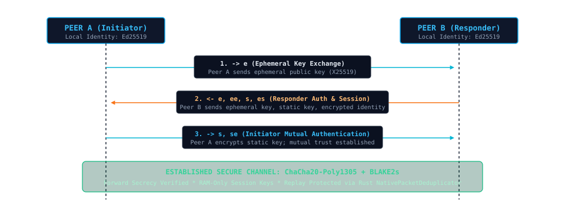

Security Policy & Cryptography
Detailed disclosure of BitChat's cryptographic primitives, mutual Noise XX handshake, threat model, known limitations, and private vulnerability reporting process.
Verified Security Foundation
Noise XX Handshake
Provides mutual peer authentication without relying on certificate authorities, public key infrastructures (PKI), or central key servers.
Forward Secrecy
Ephemeral Curve25519 (X25519) keypairs are negotiated per connection. Session encryption keys reside exclusively in volatile process memory and are zeroed upon session termination.
Authenticated Encryption
Payloads are protected with 256-bit ChaCha20 authenticated with Poly1305 MACs (AEAD). Payloads modified in transit are rejected before application dispatch.
Noise XX Mutual Authentication Flow
How two nodes mutually prove their identity and establish symmetric encryption keys across radio or LAN without transmitting long-term keys in plaintext.

Security Guarantees & Explicit Limitations
Threats Mitigated
- Passive Eavesdropping: Direct channel payloads are encrypted with forward-secret keys.
- Active Packet Tampering: Poly1305 authenticators ensure message integrity; modified frames are discarded.
- Replay Attacks: The Rust native
NativePacketDeduplicatormaintains an LRU cache of recently processed packet IDs to suppress replays. - Server Compulsion: No central servers or accounts exist to be subpoenaed, breached, or monitored.
Known Limitations & Non-Guarantees
- RF & Network Traffic Analysis: Physical radio observers can detect BLE transmission events and MAC addresses. LAN observers can inspect UDP discovery frames.
- Physical Device Compromise: Long-term identity keys in
~/.bitchat/identity.jsonrely on OS file permissions (0600 on POSIX). BitChat does not yet encrypt identity keys with an on-disk passphrase. - Broadcast Channels: Messages broadcast to public channels (e.g.
#public) are not end-to-end encrypted; all local peers receive them as intended. - Radio Denial of Service: Physical RF jamming or Bluetooth connection saturations cannot be prevented by application-level software.
Reporting Security Vulnerabilities
We take reports of security vulnerabilities seriously and appreciate the assistance of the security research community.
Private Security Advisory Process
Please do not report security vulnerabilities through public GitHub issues, public discussion forums, or social media. Instead, use GitHub's private vulnerability reporting feature: